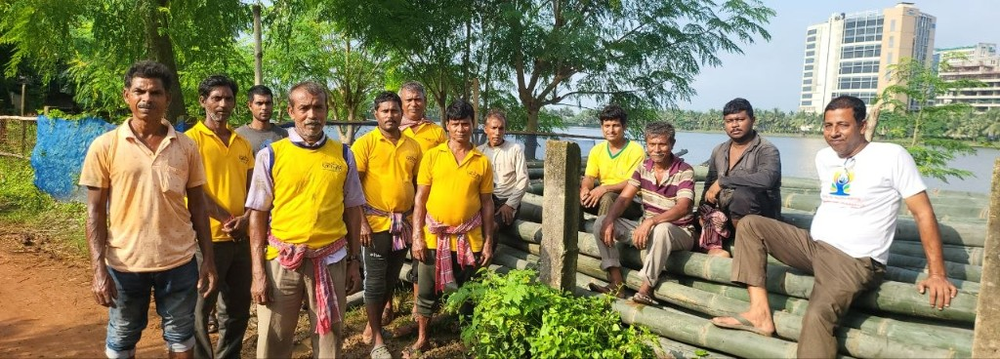

Crop / Horticulture
Cereals, pulses, oilseeds and fodder on the field. Vegetables, fruit and homestead trees on bunds and the house plot. Residue can move to livestock or compost.
Integrated Farming FarmTech + AgriTech
For farmers
This Pujo names the farmer, then shows a working Integrated Farming loop. The live farm is being built.

Sharadiya 2026 is dated 16-20 October 2026 in Kolkata, West Bengal. The exact pandal address is still to be announced. The gathering is organised as Bharatiya Krishak Samaj Pujo. Organised by KarmYog for the 21st Century. Bharatiya Krishak Samaj is the organising partner, not the title sponsor.
The farmer is the person who feeds the household. This gathering is meant to put that person in view, so the farm story is allowed to stand next to the festival. Recognition is not a substitute for a working farm.
An award ceremony on Ashtami evening is meant for farmers the state does not usually photograph. Nominations on the main Pujo site have no entry fee. If you farm, or know a farmer, that nomination lives on the main site. This page is the livelihood door, not the awards desk.
One standing crop, often paddy, meets weather, price and bought inputs at once. An integrated farm keeps several enterprises on the same holding so one leftover can feed the next. This is a circular model. It is not a guaranteed zero-waste farm and not a guaranteed income.
Cereals, pulses, oilseeds and fodder on the field. Vegetables, fruit and homestead trees on bunds and the house plot. Residue can move to livestock or compost.
Dairy beside the water where the sketch shows it. Poultry and duckery on the same holding. Manure can move to soil, energy or compost. Duck and fish sit together in the model, not as a promise.
The pond is reservoir and fishery. Water can serve crop, fish and horticulture. Pond silt can return to the beds. That transfer is the point of the loop.
Residue, manure and silt come back as compost and bio-inputs. Soil is where the loop closes. Bought fertiliser is what the model tries to reduce, not a figure anyone is owed.
Allied livelihoods on the same holding. They sit beside the main loop. They are not a second farm and not a required kit.
Produce, milk, eggs, fish and fruit can feed the house and move toward local markets or an FPO. Cash returning to the household is the livelihood test, not a brochure claim.
ILLUSTRATIVE MODEL
These numbers already sit on the project as a working sketch. Outcomes vary by farm size, location, management, crop mix, input costs, yields and market conditions.
On this page, FarmTech and AgriTech name the technology layer already written into Integrated Farming: monitoring, drip, pond energy and diagnostics where they earn their keep on a small holding. That is a model-based sketch. A fuller public definition is to be confirmed. This page does not list vendors, does not sell an app, and does not claim a live farmer network.
Five hundred metres from Sector V. Status: being built. The 2026 pavilion is intended as a working farm, not only a festive facade. It is not open as a finished demonstration.
This sequence is the intended story. Before-photographs, the named plot, and completion status are not yet approved. Do not read these frames as a finished documentary.
The intended opening is a difficult-looking place. No before-photograph is published here.
The team moved to the side people can reach. The map of that decision is still to be confirmed.
A live integrated farm: crop, water, animals and market on one holding. Not a painted backdrop.
A public progress feed waits for verified stills when the team posts them. Nothing is invented in the meantime.
Leftover becomes input. That is the farm people should later be able to walk.
About 5,000 village farms is a mobilisation target. Not a result already achieved.
TARGET
That figure is already published on this project, between Puja 2026 and Puja 2027. It is not a completed count. Your role on this page is the farmer on the land. How patrons attach is a separate door. This page does not enrol you into a paid programme.
If you farm in West Bengal and want to be considered when a real intake exists, leave a name. This is not enrolment. This is not a promise of Rs 1 lakh. Rs 1 lakh is proposed seed-support in the patron model. It is not a farmer grant paid on this page.
Nothing on this page takes money. The form is not sent to a server. You may later send the downloaded file outside this website.
Several enterprises on one holding so leftover becomes the next input: crop, horticulture, livestock, poultry, fishery, water, compost, soil, bee, mushroom, household and market. See the loop above.
Practising farmers in West Bengal, local teams and FPOs, and FarmTech / AgriTech readers who need to understand the IFS model. It is not a vendor catalogue.
The farmer is the person on the land. Interest now is a name-note. Land, labour and working capital in the later mobilisation sketch sit with identified local teams. Formal intake is not yet available.
The careful-tools layer already in the project model: monitoring, drip, pond energy and diagnostics where they earn their keep. A fuller public definition is to be confirmed.
Agricultural technology in that same model-based sketch. It is not a named vendor programme on this page. Fuller public definition is to be confirmed.
No. A demonstration in the East Kolkata Wetlands, 500 metres from Sector V, is being built. The 19 August 2026 photograph is preparation, not a completed farm.
The intended story is a difficult-looking site becoming a working integrated farm. Frames stay empty until photographs and plot identity are approved. Pending confirmation.
About 5,000 village farms is a mobilisation target between Puja 2026 and Puja 2027. It is not a completed count.
No. Rs 1 lakh is proposed seed-support in the patron model. It is not a farmer grant paid on this page. Filling the form does not award money.
Interest only. The file downloads to your device. Enrolment and approved participation are not yet available. This is not farmer registration.
Confirmed on file: the EKW location 500 m from Sector V is being built; Ashtami awards with no entry fee nominations on the main site; interest is a local download. Illustrative / indicative: 1-2.5 acre sketch, 365-day cash, 3x-5x, 50-70%, Rs 2-3.5 lakh, and the FarmTech tool list. Outcomes vary by size, location, management, crop mix, costs, yields and markets.
No. Nothing on this page takes money. There is no UPI, no 80G receipt, and no government scheme claimed here.